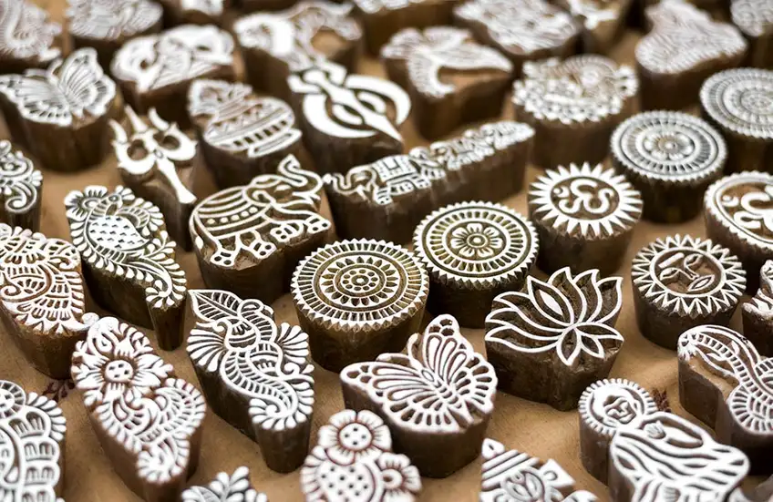
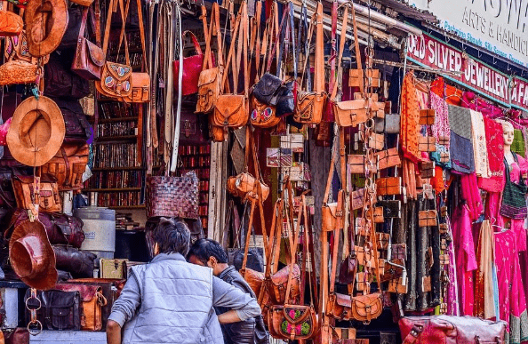
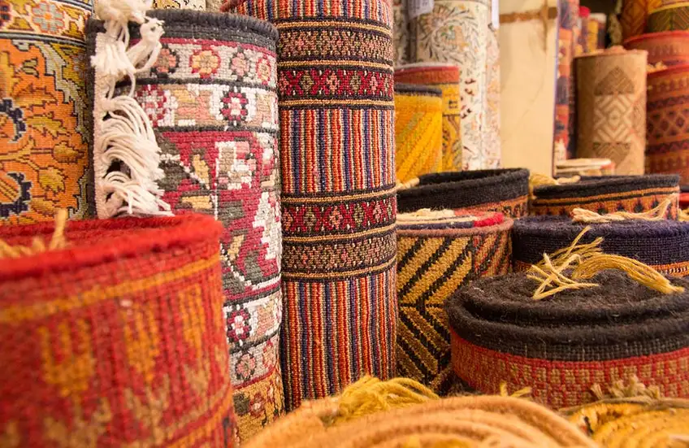
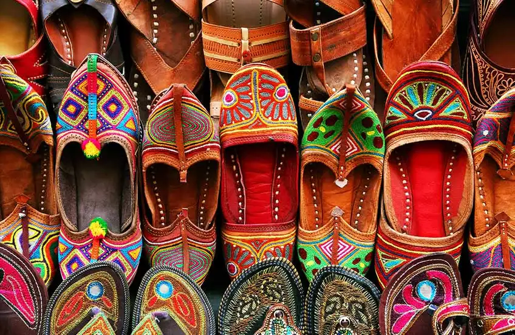
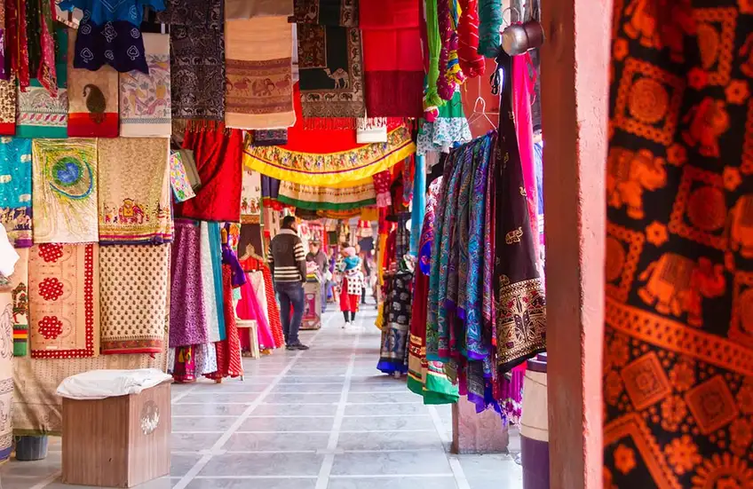

The Pink City of Rajasthan, Jaipur is renowned for architectural wonders including royal palaces, forts and temples. However, not many are aware that the capital city is also home to a range of marketplaces, thus making it a shopper's delight. Famous for a plethora of handcrafted items like traditional jewelry, shoes, wooden souvenirs, textile goods, etc., Jaipur will undoubtedly enhance your shopping experience ten-fold. Following is a list of places to visit in Jaipur where you can shop till you drop:
1.Chandpole Bazaar, Jaipur

Chandpole Bazaar is a conventional market where you can find handicrafts made of wood, stone, and marbles. This bustling marketplace is quite renowned for a variety of showpieces, handlooms, colorful fabrics, as well as beautiful jewelry. ‘Khazane walon ka Rasta’ in Chandpole is well-known for products like footwear, stone sculptures, intricately designed souvenirs, and multi-colored traditional turbans. Here, travelers can also find beautifully carved wooden sculptures, which are a perfect gift for your loved ones. At this traditional shopping market, you can find creativity at its best as it offers marble sculptures in different designs.
- What to buy: Marble showpieces and carved wooden souvenirs
- Days Open: All days
- Timings: 10 a.m. to 11 p.m.
2.Bapu Bazaar, Jaipur

Easily recognized by red walls, Bapu Bazaar is an all-in-one marketplace when it comes to buying Jaipuri items. Here, you can find the best quality goods at a reasonable rate. Characterized by hustle and bustle of a typical Indian market, Bapu Bazaar is quite famous for products like Mojari footwear and leather items. One of the main features of this market is lac jewelry, which is definitely a must-buy! Jaipuri shawls and woolens, leheria stoles, perfumes, and handicrafts are some other products for which this bazaar is quite famous.
- What to buy: Mojari footwear and leather products
- Days Open: All days
- Timings: 10:30 a.m. to 7:30 p.m.
3.Tripolia Bazaar, Jaipur

Renowned for selling varieties of bangles as well as beautiful lac jewelry, Tripolia Bazaar is one of the best shopping areas in the capital city of Rajasthan. In this active marketplace, which is located between Chhoti Chaupar and Manak Chowk, you can find antiques and handicraft products. This bazaar is also acknowledged for beautifully designed carpets with themes like human figures, flora and fauna and landscape. Traditional wear, Bandhini fabrics, furniture, brassware, and ironware are some of the items for which this market is just the right place.
- What to buy: Lac jewelry, carpets and brassware
- Days Open: Monday to Saturday
- Timings: 10 a.m. to 7 p.m.
4.Nehru Bazaar, Jaipur

Situated on Jaipur's MI Road, Nehru Bazaar is another must-visit market for shopaholics. Also called as Mojaris, the colorful traditional Rajasthani juttis are the main attraction of this marketplace, and are available in diverse styles and hues. Located in close proximity to Chaura Rasta, Nehru Bazaar houses different shops which are well-known for offering trinkets, printed dress material as well as colorful bandhani dupattas. Ready-made garments, bags, household items, blue pottery items and footwear are also amongst the popular items of this bazaar.
- What to buy: Traditional Rajasthani juttis and vibrant bandhani dupattas
- Days Open: All days
- Timings: 10:30 a.m. to 7:30 p.m.
5.Badi Chaupar, Jaipur

Located in close proximity to Hawa Mahal, Badi Chaupar is a huge shopping area, dotted with several shops selling varied types of items. It is a one-stop-shop for all products, including beautiful juttis, Jaipuri printed sarees as well as embroidered bed sheets. Lac bangles, which are available in diverse colours, are a sight to behold. This marketplace is also well-known for housing shops which sell conventional souvenirs and carry bags.
- What to buy: Lac bangles and Jaipuri sarees
- Timings: 11 a.m. to 8 p.m.